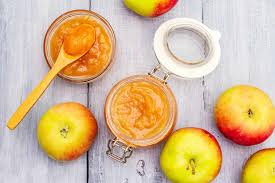

Home
Apple Jelly

Description
Apple jelly is a sweet, transparent preserve made from
cooked and strained apple juice,
sugar, and pectin, characterized by its smooth, uniform texture,
clear appearance, and delicate, crisp apple flavor. It is a versatile spread enjoyed
on toast and scones, used as a glaze for meats and pastries, or paired with savory items
like cheese and roast chicken.Apple jelly is a sweet,
transparent preserve made from cooked and strained apple juice,
sugar, and pectin, characterized by its smooth, uniform texture,
clear appearance, and delicate, crisp apple flavor.
It is a versatile spread enjoyed on toast and scones, used as a glaze for
meats and pastries, or paired with savory items like cheese and roast chicken.
Ingredients
- 3 1/2 pounds cooking apples such as Braeburn, Granny Smith,
and/ or Rome Beauty
- 3 cups water
- 1 cup apple juice, or up to 2 cups as needed
- 1 (1.75 ounce) package regular powdered fruit pectin or 6 tablespoons classic powdered fruit pectin
- 7 1/2 cups white sugar
Steps
- Remove stems and blossom ends from apples.
Do not peel or core (peels and cores contain pectin and will be discarded later).
Chop apples.
- Combine apples and the water in a large pot. Bring to a boil over high heat.
Reduce heat to medium-low; simmer, covered, 10 minutes.
- Place a colander lined with cheesecloth in a large bowl. Pour apple mixture into colander. Let drain, without pressing, until mixture stops dripping, 1 to 2 hours.
Add enough apple juice to juice in bowl to reach 5 cups. (Discard solids.)
- Return juice to clean large pot. Whisk in pectin. Bring to a full rolling boil. Add sugar. Return to a full rolling boil. Boil hard 1 minute.
If foam forms on surface, quickly glide a metal spoon over surface to skim off foam; discard.
- Ladle into 10 sterilized half-pint jars, leaving 1/4 inch headspace. Wipe jar rims; adjust lids and bands.
- Place filled jars in a boiling water canner,
with enough water to cover jars by 1 inch.
Process for 5 minutes (start timing when water returns to a boil).
Remove jars from canner. Cool on a wire rack.